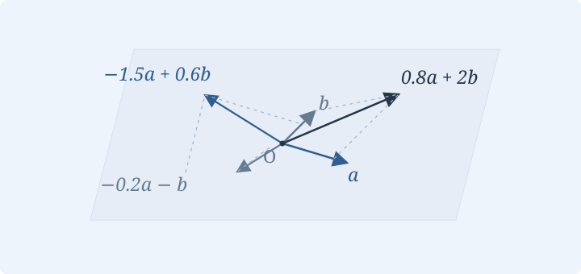

1.2 向量线性相关性
从线性组合与张成空间出发，理解向量组中方向是否冗余。
1.2.1 · 什么是线性组合？
什么是线性组合？
思考 · 用少数几个向量，描述哪些位置？
从给定的一组向量出发，只使用加法和数乘，可以得到什么？这些向量中，是否有某个方向其实是多余的？这分别引出线性组合与线性相关性。
定义 · 线性组合
设 \(\vec a_1,\ldots,\vec a_m\) 是一组向量，\(\lambda_1,\ldots,\lambda_m\in\mathbb R\)。向量
叫作这组向量的一个线性组合。也就是说，它是从这组向量出发，通过线性运算得到的向量。

线性组合能到达哪些位置？
几何 · 线性组合的几何解释
固定原点 \(O\)，空间中的点 \(P\) 与向量 \(\overrightarrow{OP}\) 一一对应。于是，可以把向量的集合看成终点组成的几何图形：
- 一个非零向量 \(\vec a\) 的全体线性组合，构成过原点且与 \(\vec a\) 平行的直线。
- 两个不共线的向量 \(\vec a,\vec b\) 的全体线性组合，构成过原点且平行于这两个方向的平面。
例如，\(0.8\vec a+2\vec b\)、\(-1.5\vec a+0.6\vec b\)、\(-0.2\vec a-\vec b\)，都落在同一个平面内。全体线性组合组成的集合，后续也会称为这些向量的张成空间。
什么叫线性相关？
定义 · 线性相关与线性无关
若存在不全为零的实数 \(\lambda_1,\ldots,\lambda_m\)，使得
则称向量组线性相关。否则称为线性无关：任意不全为零的系数都不能使组合等于零向量。等价地，组合等于零向量时，只能有 \(\lambda_1=\cdots=\lambda_m=0\)。
“不全为零”是至少有一个系数非零，不是要求每一个系数都非零。
怎样证明向量组线性相关？
例题 · 讲稿中的线性相关例题
给定任意空间向量 \(\vec a,\vec b,\vec c\)，证明下面三个向量线性相关：
展开讲稿解法与计算
取系数 \(3,-1,-2\)。它们不全为零，而且
所以三个向量线性相关。也可以写成 \(\vec e_2=3\vec e_1-2\vec e_3\)：第二个向量可以由另外两个表示。
线性相关性的几何判断
几何 · 线性相关的几何解释
以下结论针对三维空间中的几何向量，并把箭头平移到同一起点：
- 一个向量线性相关，当且仅当它是零向量。
- 两个向量线性相关，当且仅当它们共线。
- 三个向量线性相关，当且仅当它们共面。
- 四个及四个以上的空间向量一定线性相关。
最后一条依赖“三维空间”这个前提，不能直接套用到后面的一般高维数组向量。
探索 · 什么时候增加了一个新方向？
演示即将加入固定两个不共线向量，把第三个向量放到它们所在的平面内，再移出平面。预测这组三个向量何时线性相关，何时线性无关。
即时自测
若 \(\vec a\ne\vec0\)，向量组 \(\vec a,2\vec a,\vec0\) 是否线性相关？请给出一组符合定义的系数。
查看答案与解释
线性相关。例如取 \(2,-1,0\)，有 \(2\vec a-2\vec a+0\vec0=\vec0\)。也可以取 \(0,0,1\)。系数允许部分为零。